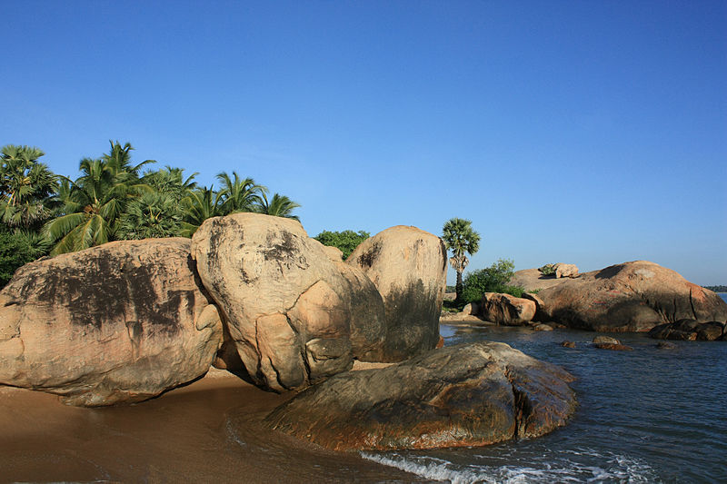

Named for its striking resemblance to a browsing elephant, this natural rock formation guards the northern edge of the Pasikuda bay.
Elephant Rock is a massive natural stone sculpture situated at the northern end of Pasikuda Beach. Its silhouette, perfectly mimicking the shape of an elephant, has made it a beloved landmark for generations of locals and a must-see for visitors exploring the eastern coast.
Climbing the rock provides one of the best panoramic viewpoints of the entire Pasikuda and Kalkudah bays. It's a popular spot for watching the sunrise over the Indian Ocean, offering a rugged, natural perspective that contrasts beautifully with the serene, shallow waters of the bay it watches over.
Back to Pasikuda Hub